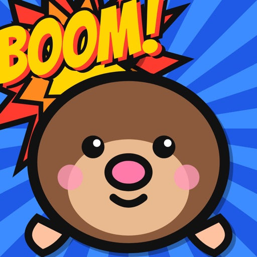
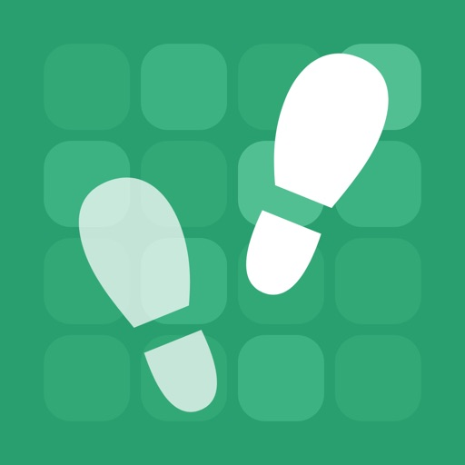
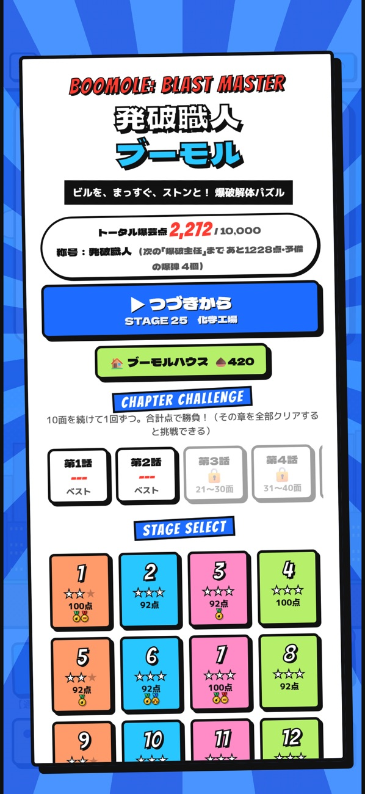
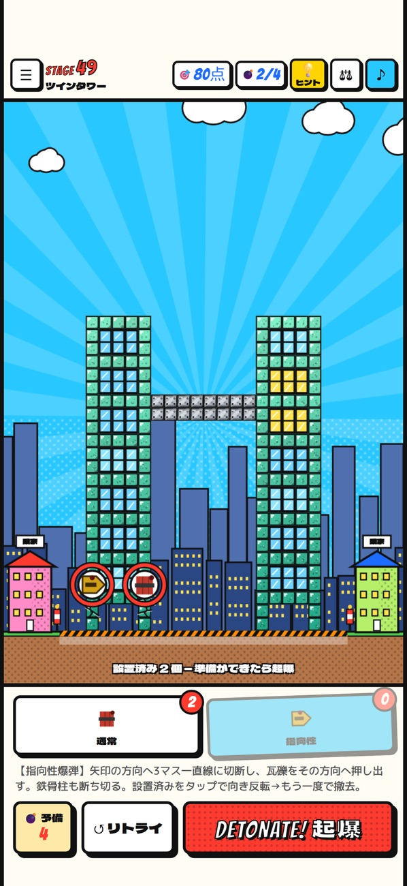
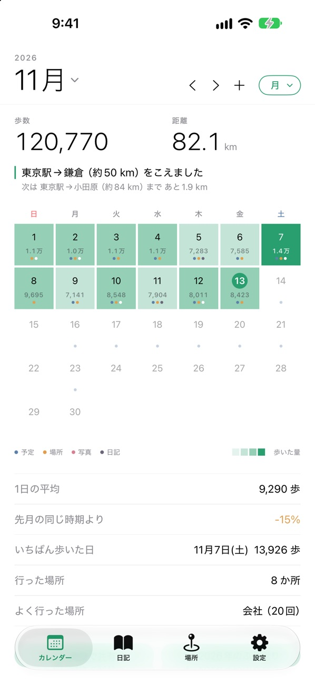
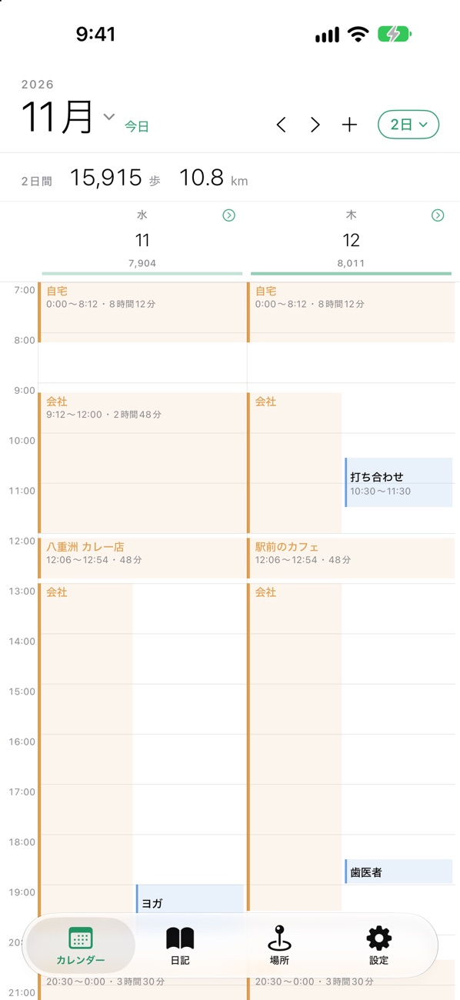

モークと AI のチームが、iPhone アプリをつくる小さなスタジオです。


ビルのどこに爆弾を仕掛ければ、まっすぐストンと崩れる？ 物理演算でリアルに崩れる、爆破解体パズル。




歩いた歩数と、行った場所を、カレンダーと日記に自動で残します。記録は iPhone の中だけに。
降りる駅の手前で、イヤホンにだけアラームを鳴らして起こしてくれる。電車の寝過ごし防止アプリ。
AI のチームとアプリをつくる毎日を、ブログに書いています。